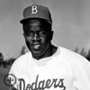

The Harlem Renaissance, a cultural movement that took place in the 1920s and 1930s, had a notable influence on sports. The movement helped to advance black athletes' rise to prominence. During the Harlem Renaissance, several African American athletes, including Joe Louis and Jesse Owens, became well-known in general American society. Challenging the cultural stereotypes that previously marginalized them, they became symbols of hope and inspiration for African Americans, showing that success was possible despite facing discrimination. Furthermore, the Harlem Renaissance contributed to the establishment of the Negro Leagues, a professional baseball league for black players. The league gave African American athletes an opportunity to showcase their talents and provided entertainment for black audiences, who were often excluded from white-majority sports venues. The success of black athletes during the Harlem Renaissance played a significant role in promoting integration in sports. By breaking down racial barriers and challenging the notion of white supremacy, they paved the way for future generations of black athletes. Overall, the Harlem Renaissance was a pivotal moment in the history of sports. It helped to create opportunities for African Americans, and promoted greater racial integration in the world of sports.
